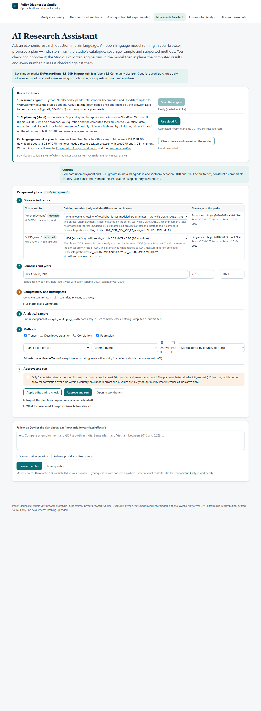
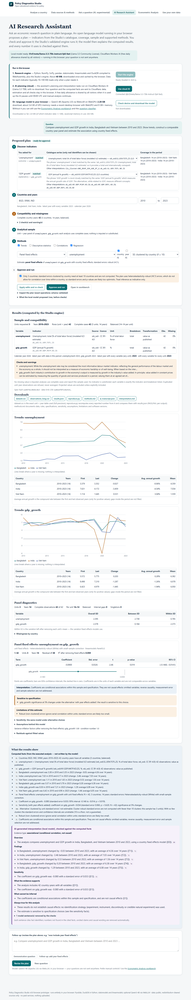
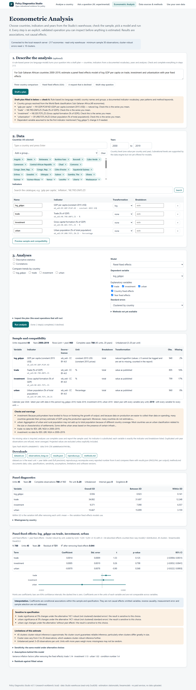
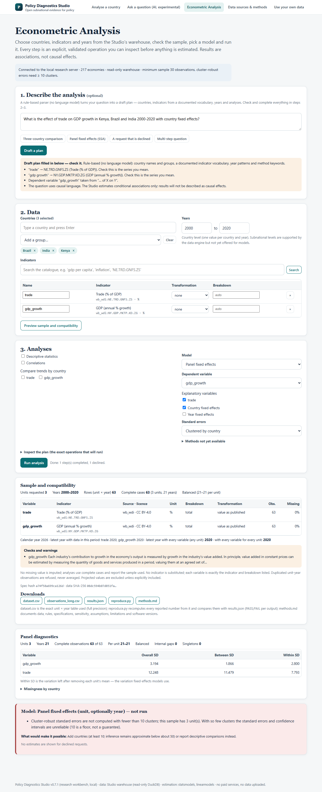

Research tools
The Econometric Analysis workbench and the AI Research Assistant run in your browser: Python, statsmodels, linearmodels and DuckDB compiled to WebAssembly (about 48 MB, downloaded once), with data for each indicator loaded only when needed. The assistant's planning and interpretation steps use a language model: Cloudflare Workers AI by default, or a model downloaded into your browser.
Econometric Analysis workbench
Select countries, indicators and years (1,710 public country-level indicators, 217 economies); preview the sample and a compatibility report (units, breakdowns, missingness, latest common year); run descriptive statistics, trends, correlations, OLS or panel fixed effects with country and year effects; inspect coefficient tables, diagnostics and sensitivity checks; and download the analytical dataset, results, a reproduction script that recomputes every reported number, and a methods note.
- Inference: robust or country-clustered standard errors (clustered errors are not computed with fewer than 10 countries, and flagged as approximate below 50); estimators validated against NIST reference values and an independent implementation, and the browser engine against the local one.
- Refusals: too few observations, unidentified or collinear specifications and unavailable methods (difference-in-differences, event studies, instrumental variables, spatial and survey-weighted models) are declined with the reason.
- Interpretation: regression results are reported as associations, never as causal effects; each estimate lists its assumptions and shows when results are sensitive to specification.
AI Research Assistant experimental
Ask a research question in plain language. A language model proposes a plan using only real catalogue indicators and the supported methods; you edit and approve it; the validated engine runs it in your browser; and the model explains the computed results. Every number in the explanation is checked against the computed facts, causal wording is removed, and the explanation is shown separately from the facts. Follow-up requests such as “now include year fixed effects” revise the plan on the same frozen sample.
Where it runs: by default the four model steps (reading the question, choosing among catalogue indicators, revising a plan, drafting the interpretation) run on Cloudflare Workers AI (Llama 3.3 70B); your question, plan details and the computed facts are sent to Cloudflare, data files are not. A free daily allowance is shared by all visitors; when it is used up the assistant pauses until 00:00 UTC and the workbench keeps working. Alternatively, Qwen3-4B (2.28 GB) can be downloaded into a WebGPU browser, and then nothing is sent. In testing on 15 questions the cloud model chose the expected indicators automatically in 10 of 11 cases and referred the rest to the user for confirmation.
Screenshots




Also on this website
Analyse a country (regional poverty, observed spending versus need where data exist, hypothetical funding rules, health, education and climate exposure, with charts, maps, downloads and a printable policy note) · Data sources & methods · Ask a question (browser-based question classifier) · Use your own data (compatibility checker and allocation tool; files stay in your browser).